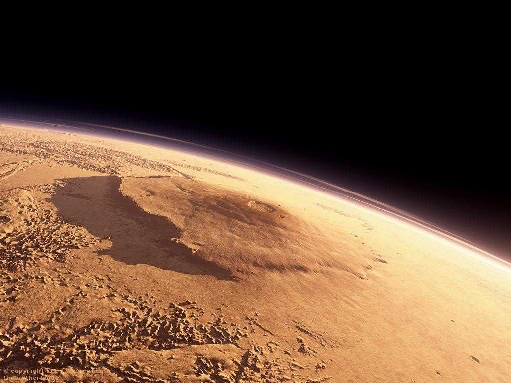

Іноді я відчуваю себе більш причетним до галактицки М33, ніж до того, що лежить у мене на тарілці.
Борис Крігер
Цікавинки про космос
Виявляється, що в нашій Сонячній системі існує тіло, що нагадує нашу планету. Його іменують Титаном і він є супутником планети Сатурн. Він також має річки, моря, вулкани, щільну атмосферу, як і наша планета. Дивно, але навіть відстань між Титаном і Сатурном дорівнює відстані між нами і Сонцем, і навіть співвідношення ваги цих небесних світил одне співвідношенню ваги Землі і Сонця.
Все ж розумного життя на Титані навіть не варто шукати, тому, як його водойми підвели: вони складаються в основному з пропану і метану. Але все ж, якщо останнє відкриття отримає підтвердження, то можна буде стверджувати, що на Титані існують примітивні форми життя. Під поверхнею Титану існує океан, який складається на 90% з води, решта 10% можуть бути складними вуглеводнями. Є припущення, що саме ці 10% можуть дати початок найпростішим бактеріям.
Автори-фантасти нафантазували близько п’яти різних типів планет. Виявляється, що цих видів в сотні разів більше. Вчені відкрили вже близько 700 типів планет. Одна з них — це алмазна планета, причому у всіх сенсах цього слова. Як відомо, вуглеводу потрібна зовсім малість, щоб перетворитися на алмаз в цьому випадку умови співпали так, що одна з планет затверділа і перетворилося в коштовність вселенського масштабу.
Велика Ведмедиця насправді не просто сузір'я, а так званий Астеризм. Саме так називається скупчення зірок, які насправді розташовані дуже далеко одна від одної, в різних галактиках. Просто через особливе розташування Землі щодо астеризму, нам здається що вони знаходяться в одній площині.
Сонячна речовина розміром з головку булавки, поміщена в атмосферу нашої планети, почне з неймовірною швидкістю поглинати кисень і за секунди знищить все живе в радіусі 160 кілометрів.
Марсіанський вулкан «Олімп» є найбільшим в Сонячній системі. Його протяжність більше 600 км, а висота 27 км, у той час як висота найвищої точки на нашій планеті, піку гори Еверест, досягає всього 8,8 км.

Величний і могутній Олімп
Крихітні нейтронні зірки, чий діаметр не перевищує і 10 км, важать як Сонце . Сила тяжіння на цих астрономічних об'єктах надзвичайно висока і якщо, гіпотетично, на ній висадиться астронавт, то вага його тіла збільшиться приблизно на один мільйон тонн. Якщо наповнити чайну ложку речовиною, з якої складаються нейтронні зірки, то її вага буде дорівнювати приблизно 110 мільйонам тонн!
Венера, це єдина планета Сонячної системи, яка обертається проти годинникової стрілки. Цьому існує декілька теоритических обгрунтувань. Деякі астрономи впевнені, що така доля спіткає всі планети з щільною атмосферою, яка спочатку уповільнює, а потім закручує небесне тіло у зворотний від первісного обертання бік, інші ж припускають, що причиною послужило падіння на поверхню Венери групи великих астероїдів.
Металеві предмети у відкритому космосі можуть мимовільно приваритися один до одного, але цього не відбувається, так як метал окислюється ще на Землі.
Газова хмара в сузір’ї Орла містить величезну кількість етанолу, тобто, по суті, алкоголю.
Юпітер — досить дивна планета . Вчені не можуть точно відповісти, чому на ній природні явища ведуть себе по -іншому. Наприклад , Юпітеру властивий один цікавий феномен — феномен «гарячих тіней» . Вся справа в тому , що зазвичай в тіні температура нижче , ніж на освітлених ділянках . Однак на цьому гіганті там , де поверхня в тіні , температура вище , ніж у відкритій навколишній місцевості. Існує багато пояснень цієї аномалії. Самою правдоподібною теорією є думка , що всі планети поглинають більшу частину енергії нашого світила , але невелику частину — відбивають. Виходить , що Юпітер навпаки відображає більше тепла , ніж отримує його від Сонця.